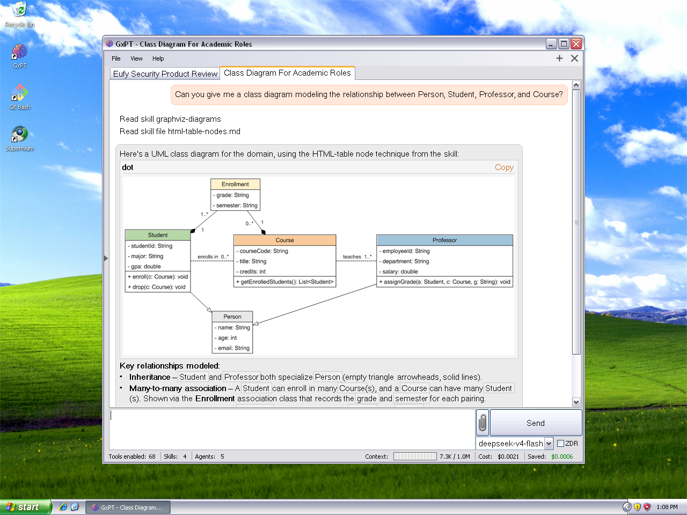
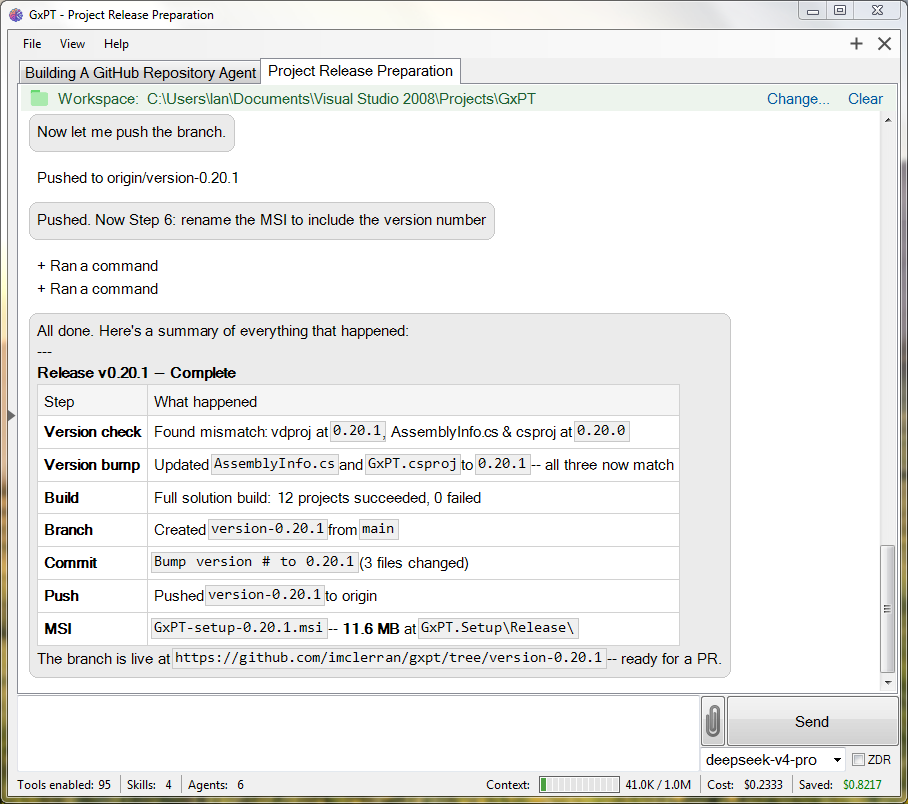

Screenshots
GxPT running across themes and Windows versions. More to come as the app evolves.

Sub-agents

Diagrams

Agentic Coding

Verify Project Versions Skill

Tool Approval Prompt

Code Highlighting

Dark Mode

Running on Windows 7